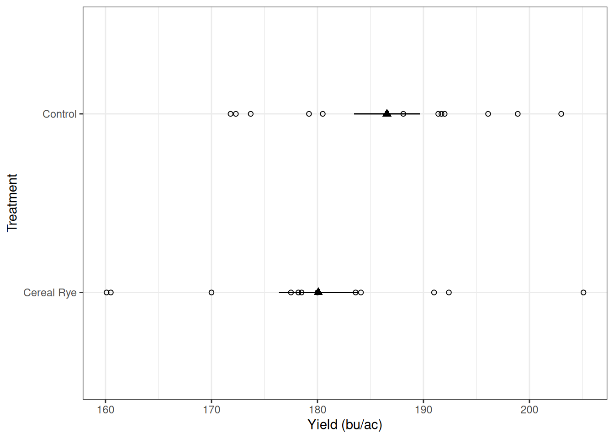
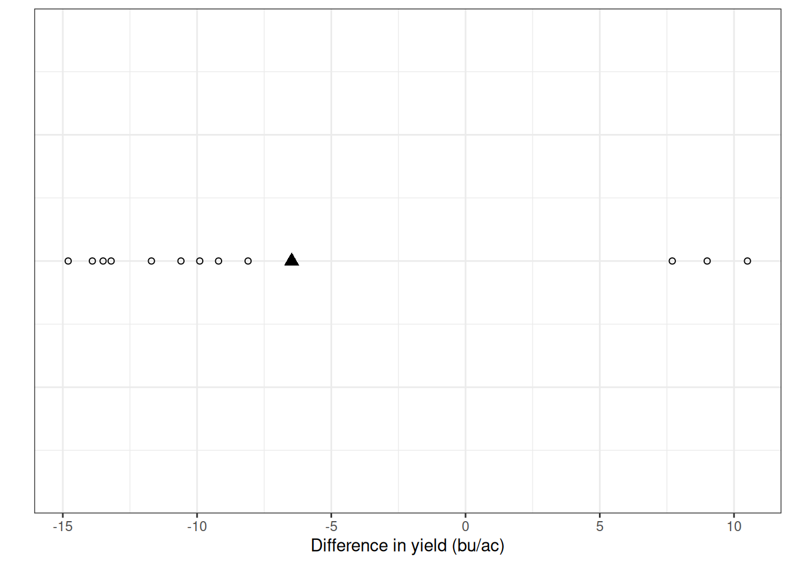
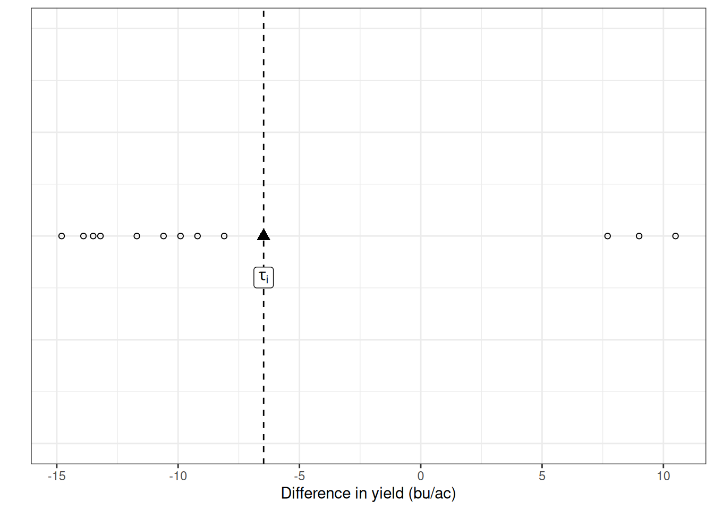
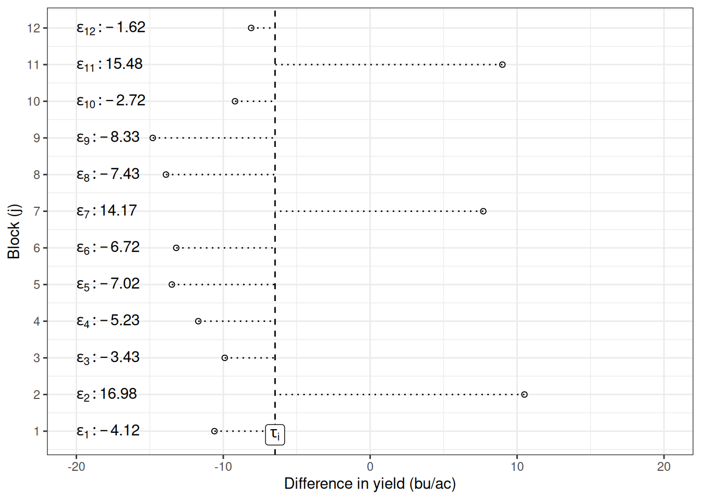
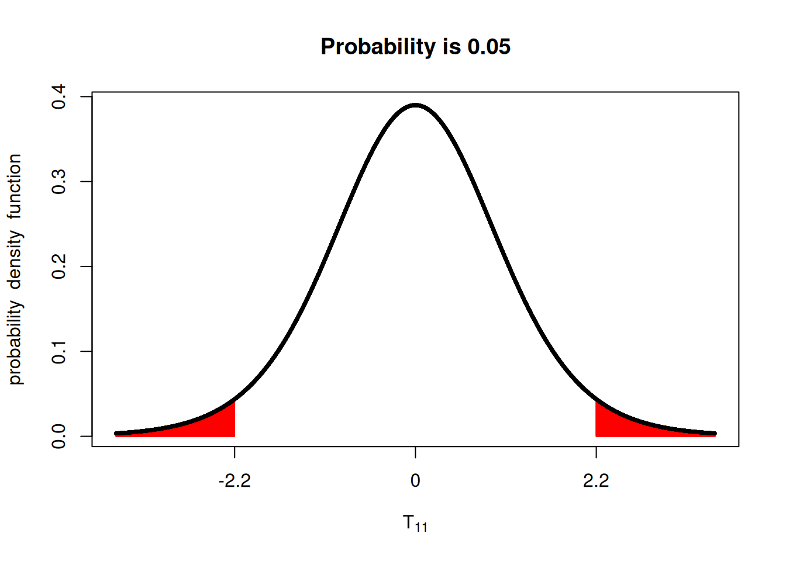

What are we actually doing when we run a test?
So far in this course, we have:
- Described populations using the normal distribution
- Learned about sampling variability
- Introduced the \(t\)-distribution
- Compared two treatments using a paired \(t\)-test
- Computed confidence intervals
- Used
t.test()in R
But today I want to slow down and ask a more fundamental question:
What is a statistical test actually doing?
When you click Run on a \(t\)-test in R and see a p-value, what just happened?
Today I want to dive more into every aspect of a statistical test. I believe this is a good place to do this because we will explore more complex tests and trial designs from now on, and the \(t\)-test provides a simple framework to explain these topics.
Research Question
Before we run any test, and ideally before we conduct the trial, we should think of the research question. Not only will the research question guide our statistical test, it will also guide our experimental design and which measurement should we make.
Let’s look at an example from last module. We were interested in asking whether corn following cereal rye presented a yield difference. In this case, our research question can be stated as:
Does corn yield following cereal rye differ from corn yield following fallow?
Notice that the research question contains no judgment of good/bad. From the research question, we understand what measurements to make (yield), what our treatments are (cereal rye vs. no cereal rye), and we can derive our hypothesis.
This is different from some of the questions we ask, which do not tell us how to conduct a statistical test. For example:
- Is cereal rye bad?
- Are cover crops good?
- Do cover crops make corn perform better?
Last module’s example
Now that we talked about the research question, I think it would be productive for us to exemplify how we go from the question to the statistical test. Let’s focus on last week’s rye or no rye example.
Hypotheses
From the research question, we can draw the following competing statements.
\[H_0: \mu_{rye} = \mu_{no~rye} \newline H_a: \mu_{rye} \neq \mu_{no~rye} \]
A statistical test does not prove Ha. It evaluates whether the data are compatible with \(H_0\)
Notice that the alternative hypothesis (\(H_a\)) is compatible with the language used in the research question, which states whether there’s a difference in yield.
If the research question stated whether there’s a reduction in corn yield, our hypothesis would have to be adjusted. So far, in this course, I have not made that distinction to keep things simple, but we will explore this a little more in depth when we talk about one-sided versus two-sided \(t\)-tests.
The Linear Additive Model Behind the \(t\)-Test
Up to this point, we have written hypotheses using symbols. But underneath every hypothesis test is a model.
For the rye example, the paired \(t\)-test can be written as a linear additive model:
\[Y_{ij} = \mu + \tau_i + \epsilon_{ij}\] Where \(i\) indexes the treatment (rye, no rye), and \(j\) indexes the observation for that treatment (every strip).
Let’s slow down and unpack this.
\(Y_{ij}\) = observed yield
\(\mu\) = overall mean yield
\(\tau_i\) = treatment effect (rye or no rye)
\(\varepsilon_{ij}\) = random error
This equation says:
Observed yield = overall average + treatment effect + random variability
Looking deeper into the data
Let’s take a look at the rye example and explore what each model parameter represents. As a reminder, let’s look at the data below:
Since we were looking at the difference between paired plots, we can represent it as the difference between plots. In this plot, the open circles represent the individual differences for every pair, and the filled triangle represents the mean difference.

Remember, we are testing for differences among the treatments. In summary, we are testing whether our difference is zero. Because we are analyzing paired differences, the overall mean cancels out, and the model simplifies to:
\[\Delta Y_{ij} = \tau_i + \epsilon_{ij}\] And the hypothesis we are testing is:
\[H_0: \tau_i = 0 \newline H_a: \tau_i \neq 0\]
Let’s start with identifying \(\tau_i\) first. Since \(\tau_i\) is the mean difference between the treatments:

Ok, we were able to identify \(\tau_i\) in the graph. So it’s easier to see, let’s spread the individual observations along the y-axis and identify the errors (\(\epsilon_{ij}\)). The distance between the points and the \(\tau_i\) line are the errors for each plot.

The test statistic
For the paired \(t\)-test:
\[T = \frac{\bar{x} − \mu}{\frac{s}{\sqrt{n}}} = \frac{mean~difference − 0}{standard~error}\]
Notice:
- Numerator = signal
- Denominator = noise
Statistical tests measure signal relative to variability.
Large signal relative to noise → large |T| → small p-value.
Interpreting the \(t\)-test output
After running a paired \(t\)-test, you obtained:
Paired t-test
data: rye_wide$Yield.Control and rye_wide$`Yield.Cereal Rye`
t = 2.3366, df = 11, p-value = 0.03941
alternative hypothesis: true mean difference is not equal to 0
95 percent confidence interval:
0.3756842 12.5743158
sample estimates:
mean difference
6.475 Rounding that p-value to 0.04, what does 0.04 actually mean?
It does NOT mean:
- There is a 4% chance rye reduces yield
- There is a 4% chance the null hypothesis is true
- There is a 96% chance rye hurts yield
It means:
If there were truly no difference in yield between rye and no rye, we would observe a \(t\)-statistic this or more extreme only about 4% of the time due to random sampling variability.
Errors of Statistical Tests
I would love to come here and tell you that statistical tests make no mistakes. However, due to the random nature of sampled data, this is not true.
There are two instances in which we can make an error. See the table below:
| Reject \(H_0\) | Fail to Reject \(H_0\) | |
|---|---|---|
| \(H_0\) is true | Type I Error | \(\checkmark\) |
| \(H_0\) is false | \(\checkmark\) | Type II Error |
Type I and Type II Errors
Since we are dealing with randomness, each of these error sources have their own probability. Let’s take a look:
Type I Error:
- Rejecting \(H_0\) when it is true.
- This is a threshold we set when conducting the test.
- Probability = α (often 0.05).
Type II Error:
- Failing to reject \(H_0\) when it is false.
- This is how often do we fail to identify a true effect.
- Probability = β.
These errors reflect uncertainty in decision-making.
Statistical Power
Power is the probability that we correctly detect a true effect. It would be amazing if we could maximize power and reduce Type I error at the same time. However, it’s not how it works.
Thinking of this trade-off
When we decrease the significance level (\(\alpha\)), we decrease the probability of Type I error. However, even if \(H_0\) is false, we need the \(|T|\) to be bigger in order to reject \(H_0\). Thus, we also decrease the power of our statistical test.
Look at the plots below, for example, if we have 30 samples (\(n=30\)), going from \(\alpha=0.05\) to \(\alpha=0.01\), means that \(|T|\) needs to be more extreme than 2.75, instead of 2.05, making the test stricter.
library(fastGraph)
x <- seq(-3, 3, 0.1)
t05 <- qt(c(0.025, 0.975), 29)
t01 <- qt(c(0.005, 0.995), 29)
shadeDist(t05, 'dt', parm2 = 29)
shadeDist(t01, 'dt', parm2 = 29)
In agronomy, low power means:
- Real treatment effects may go undetected
- Management recommendations may be based on insufficient replication
Power depends on:
- Effect size
- Variability
- Sample size
- Significance level (α)
More replication → smaller standard error → greater power.
One-sided hypothesis
So far, we have explored two-sided hypotheses extensively. The majority of our work has been looking at evidence of a difference, and this difference could occur in any direction.
For example, this was the hypothesis for the rye trial we have been exploring:
\[H_0: \mu_{rye} = \mu_{no~rye} \newline H_a: \mu_{rye} \neq \mu_{no~rye} \]
Now, imagine that you do not just want to test whether there a difference, let’s say you research question as stated as:
Does corn yield less following cereal rye in comparison to corn yield following fallow?
Then, your hypothesis would change accordingly to:
\[H_0: \mu_{rye} \geq \mu_{no~rye} \newline H_a: \mu_{rye} < \mu_{no~rye} \]
The difference is subtle but important. Let’s take a look at what this means for our \(t\)-test. I will paste the \(t\)-test output here again for us:
Paired t-test
data: rye_wide$Yield.Control and rye_wide$`Yield.Cereal Rye`
t = 2.3366, df = 11, p-value = 0.03941
alternative hypothesis: true mean difference is not equal to 0
95 percent confidence interval:
0.3756842 12.5743158
sample estimates:
mean difference
6.475 When we were working with a two-sided hypothesis, a more extreme \(t\)-value could mean \(t\leq -2.3366\) or \(t\geq2.3366\).

Now, however, under the one-sided hypothesis, we are looking only at the lower tail of the distribution. We can see that the p-value is now only half of what it was before.

Correctly specifying whether the \(t\)-test is one-sided or two-sided has important implications. Logically, if you assume \(\alpha = 0.05\), and you’re only using one-sided of the distribution, the \(t\)-value will be closer to zero in order to maintain the 5% of the probability distribution area. Let’s see an example.
Using both sides of the \(t\)-distribution:

Using only the lower tail:

It’s important to make sure the hypothesis and the research questions are aligned, as this will greatly influence the results of your statistical test.
Conducting a one-sided \(t\)-test in R
Great, now we understand the difference between one-sided tests and two-sided tests. How do we implement them?
rye <- read.csv('./data/cover-crop.csv')
ryew <- reshape(rye,
idvar = 'Block',
timevar = 'Treatment',
direction = 'wide')
t.test(ryew$`Yield.Cereal Rye`,
ryew$Yield.Control,
paired = TRUE,
alternative = 'less')
Paired t-test
data: ryew$`Yield.Cereal Rye` and ryew$Yield.Control
t = -2.3366, df = 11, p-value = 0.01971
alternative hypothesis: true mean difference is less than 0
95 percent confidence interval:
-Inf -1.498288
sample estimates:
mean difference
-6.475